Reconstrucción no oficial hecha por fans · Stunt GP © 2001 Team17 Software Ltd.
El clásico juego de carreras de coches teledirigidos de Team17 — reconstruido a partir del código del juego original y ejecutado de forma nativa en Windows x64 con DirectX 12.
Menús, modelos, texturas y música originales. Un ritmo constante de 60 pasos de juego por segundo y una imagen que se adapta a cualquier monitor.
- Ritmo 60pasos/s como en el original, sin depender de la frecuencia de actualización del monitor
- Tick 3–5ms un paso de juego completo, dibujado incluido (medición del autor en R19)
- Parrilla 6coches el jugador y cinco rivales controlados por la IA
- Pantalla Hor+ cualquier relación de aspecto, sin franjas y sin deformar la imagen
El juego original. Un motor nuevo y nativo.
Stunt GP es un juego de carreras de coches teledirigidos en pistas llenas de rampas, saltos y curvas peraltadas. StuntGP NEW reconstruye todo el recorrido del juego: selección de idioma, pantalla de título, menús, introducción del nombre, elección de modo, vehículo y pista, la carrera, los resultados y la vuelta al menú — todo en un único mundo de juego coherente.
No es un emulador ni un envoltorio del antiguo archivo EXE. La mecánica de conducción, el contacto con la pista, la IA de los rivales y la cámara son código nativo nuevo, reconstruido a partir de las instrucciones del programa original. El juego usa los datos originales: modelos, texturas, fuentes, música y efectos.
Donde el comportamiento original aún no se ha reconstruido, el juego muestra un error explícito con el nombre de la función — en lugar de sustituirlo por un modelo de conducción inventado, «de juguete».
Fiel al original, cómodo en un PC moderno
Menús originales
La selección de idioma, la pantalla de título, el menú principal, la introducción del nombre, la elección de vehículo y la vista previa de la pista funcionan con los gráficos, las fuentes y los textos originales del juego.
Un juego continuo
Menú → pista y modo → carrera → resultados → menú. Todo ocurre en un único mundo de juego, sin un modo de vista previa aparte.
60 pasos por segundo
La simulación funciona al ritmo del original: 60 pasos por segundo, sin depender de la frecuencia de actualización del monitor. Un paso de juego, dibujado incluido, dura unos 3–5 ms.
Cualquier monitor
La imagen ocupa la ventana a resolución nativa, sin franjas y sin deformarse. En carrera se usa Hor+ — más visión lateral con el campo de visión vertical original. El HUD se ancla a los bordes de la pantalla.
120, 144, 240 Hz
En monitores rápidos no se pierde ninguna pulsación de tecla, y la música, las luces y las pantallas de carga mantienen el ritmo original. La interpolación opcional suaviza el movimiento.
Recursos originales
Los modelos de vehículos y pistas, las texturas, las fuentes, la música y los efectos de sonido proceden de los archivos originales del juego.
Reconstruido, no inventado
Cada comportamiento reconstruido debe remitir a instrucciones concretas del archivo EXE original de referencia. El pseudocódigo del descompilador por sí solo no cuenta como prueba.
Errores del original corregidos
11 correcciones documentadas, descritas por separado del comportamiento recuperado — por ejemplo, una parada de medio segundo aproximadamente cada 7 minutos, causada por el desbordamiento de un contador de reloj de 32 bits.
Capturas reales del juego
Todas las imágenes son capturas de pantalla de la reconstrucción en funcionamiento — sin retoques ni maquetas. Las capturas marcadas con R20 se tomaron el 28/09/2026 en la versión descargable; las tres marcadas con una fecha proceden de una versión anterior del 07/09/2026.
-
Carrera Arcade — escenario japonés R20
-
En el aire tras una rampa R20
-
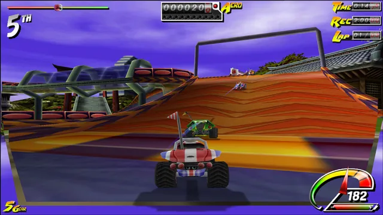
Subiendo a la rampa R20
-
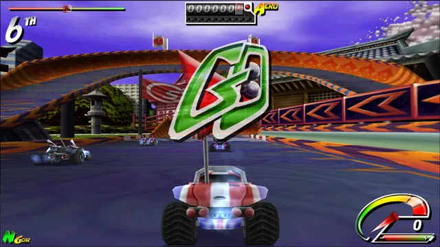
Salida — «GO» R20
-
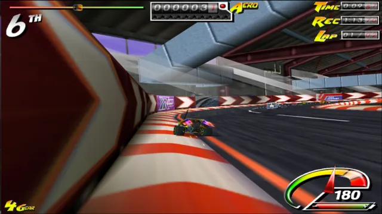
Carrera en TRACK1 en un hangar 07/09/2026
-
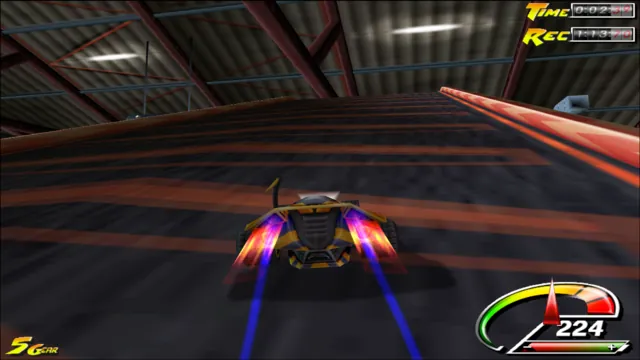
Ensayo de tiempo 07/09/2026
-
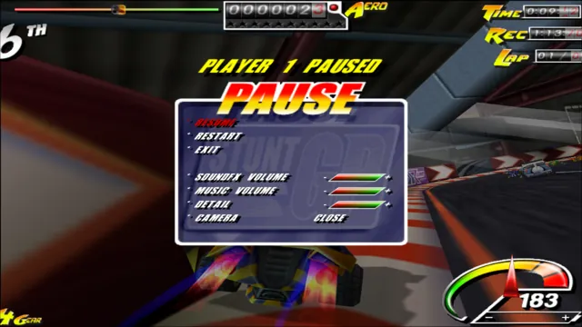
Menú de pausa 07/09/2026
-
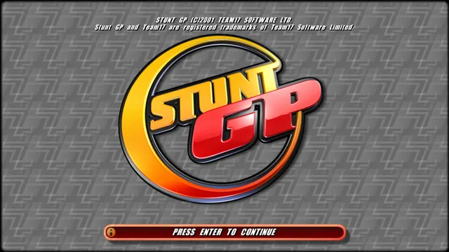
Pantalla de título R20
-
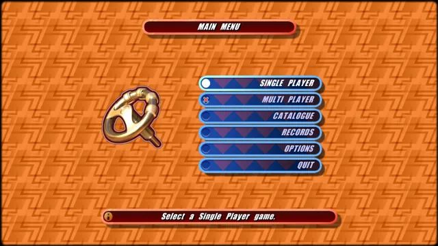
Menú principal R20
-
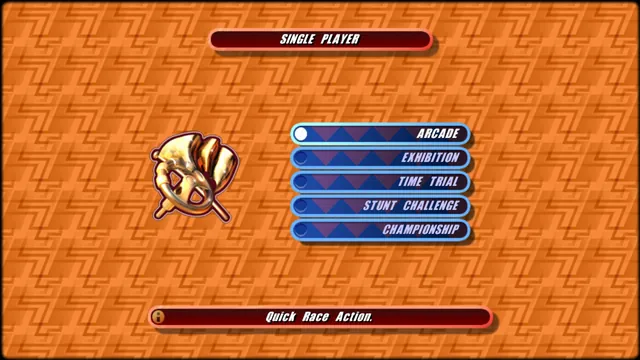
Modos para un jugador R20
-
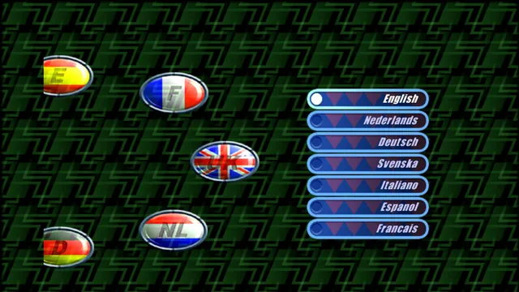
Selección de idioma R20
-
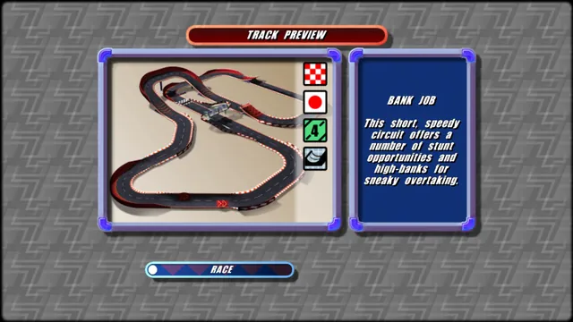
Vista previa de la pista R20


Los equipos y sus máquinas
Así es la pantalla de selección de vehículo en la versión R20 — abajo, cinco coches de ejemplo de tres equipos. Cada uno tiene sus propios valores de STUNT, GRIP y POWER y una descripción del juego original.

1 / 5
Mean Streak
Wild Wheels
«Rápido, ligero y ágil, este corredor ofrece mucho para los que deseen modificar su vehículo.»
¿Listo para la salida?
- Archivo
StuntGP_NEW-R1-program.zip- Tamaño
- 2,2 MB (2.314.032 bytes)
- Descomprimido
- 4,9 MB, 6 archivos
- SHA-256 (ZIP)
f9ff010cbe5c14cf920af58bcee4f7f1ffbe364548f92c1d7e771c45f1da537a- SHA-256 (StuntGP_NEW.exe)
17d884df278ff3df0f59e0d4f1bd629ca481f62c6b561247d635c979b8c1ab9c
Sumas de verificación: SHA256SUMS.txt. Comprobar en PowerShell:
Get-FileHash .\StuntGP_NEW-R1-program.zip -Algorithm SHA256
Requisitos
- Windows 10 u 11, 64 bits
- Tarjeta gráfica con DirectX 12 (nivel de características 11_0 o superior)
- Microsoft Visual C++ Redistributable 2015–2022 (x64) — descargar de Microsoft
- Una copia propia del Stunt GP original (CD o instalación): sus archivos no se incluyen
- Teclado
Contenido del paquete
StuntGP_NEW.exeel juego (x64, DirectX 12)START.cmdinicia el juego con interpolación de imagenSTART-MENU.cmdinicia el juego sin interpolaciónREADME.txtinstrucciones (PL/EN)data\retail\configuración inicial; copia aquí los archivos del juego originalsave\card00\carpeta para los ajustes guardados
-
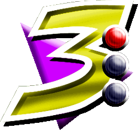
Descarga
Descarga el archivo
StuntGP_NEW-R1-program.zipy, para mayor seguridad, compara su suma SHA-256. -
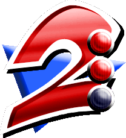
Descomprime
Descomprime el archivo en una ubicación con permisos de escritura, por ejemplo el escritorio. Desde tu copia de Stunt GP copia las carpetas
wads, graphics24, meshdata, soundadata\retail. -
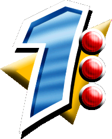
Inicia
Haz doble clic en
START.cmd. Si aparece un aviso de SmartScreen, elige «Más información» → «Ejecutar de todas formas». -
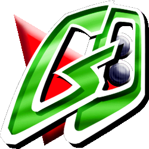
¡A jugar!
En el primer arranque, elige el idioma del menú. En la pantalla de título pulsa INTRO, elige SINGLE PLAYER, un modo y un vehículo — y a la pista.
Teclas y opciones de inicio
En la pista
- ↑Acelerar
- ↓Frenar
- ←→Girar
- ESCPausa durante la carrera
En los menús
- ↑↓←→Elegir una opción
- ENTERConfirmar
- A–ZEscribir el nombre del jugador
La distribución de teclado predeterminada procede de los datos del juego original. ESPACIO, MAYÚS y CTRL se encargan de las acciones adicionales de la distribución original.
Opciones de inicio StuntGP_NEW.exe
| Opción | Efecto |
|---|---|
--interpolation | Interpola la imagen entre los pasos del juego — movimiento más fluido en monitores de más de 60 Hz. Así inicia el juego START.cmd. |
--aspect-4x3 | Imagen original en 4:3 con franjas. La variable de entorno SGN_ASPECT=4x3 hace lo mismo. |
--width 1280 --height 720 | Tamaño de la ventana (1440×900 por defecto). |
SGN_GPU_WORLD=1 | Variable de entorno: la geometría de la pista se calcula en la GPU. Opcional, desactivada por defecto. |
StuntGP_NEW.exe --interpolation --aspect-4x3
Con honestidad: qué está listo
Funciona en R1
- Selección de idioma, pantalla de título, menú principal y menú de modos
- Introducción del nombre, elección de vehículo y vista previa de la pista
- Carreras contra cinco rivales con IA: salida, vueltas, meta y resultados
- Pausa, HUD, cámara, música y efectos: partículas, estelas, sombra
- 60 pasos por segundo constantes e imagen en cualquier relación de aspecto
En curso
- Rutas poco frecuentes del juego que aún no se han reconstruido — terminan con un error explícito con el nombre de la función
- Aún no se ha demostrado la plena coincidencia de imagen y estado del juego con el original
- La compilación R1 se comprobó con pruebas visuales y mediciones del autor; no se ejecutaron pruebas automáticas ni comparaciones con el original para ella
Últimas versiones
-
R20 28/09/2026
Cualquier relación de aspecto
Imagen en toda la ventana a resolución nativa, Hor+ en carrera, HUD anclado a los bordes, pausa y resultados centrados, menús en 4:3 con el fondo extendido hasta los bordes de la ventana. 4:3 original con la opción
--aspect-4x3. -
R19 28/09/2026
Rendimiento
60 fotogramas por segundo constantes en lugar de unos 13–37 FPS; un paso de juego, dibujado incluido, dura unos 3–5 ms. El juego arranca en el menú principal. Interpolación de imagen y geometría de la pista en la GPU opcionales.
-
R18 28/09/2026
Un solo juego
Menú → pista y modo → carrera → resultados → menú en un único mundo de juego. El ritmo del bucle depende del reloj del juego, así que 120/144/240 Hz no cambian el ritmo. Distribución de teclas a partir de los datos del juego.
-
R17 28/09/2026
Vehículos completos
Conectadas las rutinas de actualización de los vehículos: dinámica, acrobacias, ruta, efectos de los modelos, partículas, estelas, sombra, repeticiones, sonido del vehículo, además de los límites de la pista y la vuelta a ella.
Cómo se hace
A partir de instrucciones, no de suposiciones
El comportamiento reconstruido debe remitir al archivo EXE de referencia (SHA-256), a la función descompilada y a los rangos exactos de instrucciones. La descompilación no es el código fuente original.
Comparaciones con el original
Los oráculos ejecutan las instrucciones originales sin modificar en el emulador Unicorn y comparan los resultados con el nuevo código — por ejemplo, las rutinas de pausa y reanudación del juego: 13.280 llamadas comparadas sin diferencias.
Compilación estricta
C++23, compilado con
/W4 /WX— los avisos se tratan como errores — y/fp:strictpara una aritmética de coma flotante estricta.Plataforma nueva, claramente señalada
La ventana, el renderizador DirectX 12, el escalado de la imagen y el ritmo de presentación son código nuevo — señalado como nuevo, no como comportamiento recuperado del juego.
Preguntas frecuentes
¿Es el juego oficial?
No. StuntGP NEW es un proyecto de fans no oficial, sin relación con Team17 Software Ltd. Stunt GP y Team17 son marcas comerciales registradas de Team17 Software Limited.
¿Es un emulador o un envoltorio del EXE original?
No. Es un programa nativo x64 escrito desde cero en C++23, con un renderizador DirectX 12. El ejecutable original no se ejecuta — sirve de modelo a partir del cual se reconstruyen los módulos del juego.
¿Está terminado el juego?
Todavía no. R1 es una versión en desarrollo: el recorrido principal del juego funciona, pero los casos poco frecuentes que aún no se han reconstruido terminan con un error explícito con el nombre de la función — en lugar de adivinar el comportamiento original.
Windows muestra un aviso al iniciarlo
StuntGP_NEW.exe no tiene firma digital, así que el filtro SmartScreen puede bloquearlo. Elige «Más información» → «Ejecutar de todas formas». Para mayor seguridad, compara la suma SHA-256 del archivo descargado con el valor que aparece en la sección Descargar.
Falta MSVCP140.dll o VCRUNTIME140_1.dll
Instala Microsoft Visual C++ Redistributable 2015–2022 (x64) desde el sitio de Microsoft: aka.ms/vs/17/release/vc_redist.x64.exe.
¿Funciona en un monitor de 144 Hz o 240 Hz?
Sí. El juego calcula 60 pasos por segundo sin depender de la frecuencia de actualización del monitor, y START.cmd activa la interpolación de imagen, que suaviza el movimiento.
Tengo un monitor ultrapanorámico
La imagen ocupa toda la ventana sin franjas, y las carreras muestran más visión lateral (Hor+). Si prefieres el encuadre original en 4:3, inicia el juego con la opción --aspect-4x3.
¿El menú del juego está en español?
Sí. En el primer arranque puedes elegir el español — uno de los siete idiomas incluidos en los datos del juego original: inglés, neerlandés, alemán, sueco, italiano, español y francés.
¿Dónde guarda el juego los ajustes?
En la carpeta save\card00, junto a StuntGP_NEW.exe. Por eso debes descomprimir el juego en una ubicación con permisos de escritura — por ejemplo el escritorio, no Program Files.
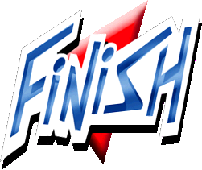
La versión R1 te espera en la línea de meta
Descarga, descomprime, ejecuta START.cmd — y corre por las pistas originales de Stunt GP.